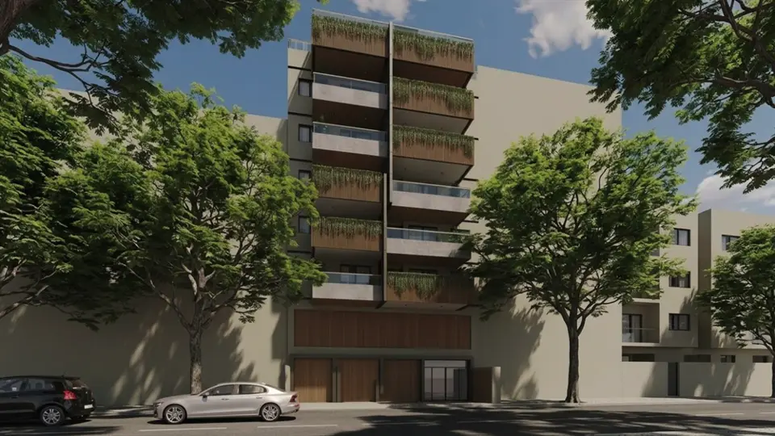

Imagens
Galeria
Imagens ilustrativas, de caráter artístico, conforme material da incorporadora.

Apenas 16 unidades para viver Botafogo com mais privacidade e exclusividade.
O Fevereiro Botafogo Living é um empreendimento residencial de arquitetura contemporânea localizado na Rua Dezenove de Fevereiro, 108, em Botafogo, Rio de Janeiro, a aproximadamente 400 metros da Estação Botafogo do metrô.
Com apenas 16 unidades, o projeto foi pensado para oferecer uma experiência de moradia mais exclusiva, reunindo localização estratégica, conforto, segurança, tecnologia e sustentabilidade.
O empreendimento possui apartamentos de 2 e 3 quartos, unidades UpGarden, além de cobertura duplex com piscina e cobertura linear com piscina.
As áreas privativas variam de 65 m² a 148 m², atendendo a diferentes perfis e necessidades de moradia. Entre as opções, há apartamentos tipo de 65 m², 80 m² e 81 m², UpGardens de 85 m², 99 m² e 122 m², cobertura duplex de 124 m² e cobertura linear de 148 m².
O Fevereiro Botafogo Living conta com apenas um bloco residencial, distribuído entre térreo, pavimento garagem e seis pavimentos residenciais, além de 16 vagas de garagem e dois elevadores. A proposta valoriza a privacidade e a experiência de viver em um condomínio com poucas unidades.
Para os momentos de lazer e bem-estar, o condomínio oferece piscina, churrasqueira, salão de festas, play infantil externo e espaço fitness no 6º pavimento. Uma estrutura pensada para reunir convivência, descanso e atividades do dia a dia dentro do próprio empreendimento.
Os apartamentos também apresentam um padrão de acabamento voltado ao conforto, com porcelanato 90 x 90 cm na sala, quartos, varanda, banheiros e cozinha, ralos ocultos em todo o apartamento, nichos embutidos nos boxes dos banheiros e infraestrutura para Split Inverter na sala e nos quartos.
Segurança e tecnologia também fazem parte do projeto. O empreendimento possui portaria remota, monitoramento por câmeras e barreiras eletrônicas, acesso por reconhecimento facial, tag e aplicativo, além de fechadura biométrica na entrada de todas as unidades. Nas áreas comuns, há iluminação LED com sensores de presença e temporizadores individuais de hidrômetros.
O projeto ainda incorpora soluções voltadas à sustentabilidade, como o uso de portas e esquadrias em madeira de reflorestamento certificada, combinando arquitetura contemporânea e escolhas construtivas mais conscientes.
Com localização em Botafogo, proximidade do metrô, poucas unidades, plantas de 2 e 3 quartos, opções com garden e coberturas com piscina, o Fevereiro Botafogo Living reúne atributos para quem busca morar em um empreendimento exclusivo, contemporâneo e conectado a uma das regiões mais tradicionais do Rio de Janeiro.
Metragens, tipologias e disponibilidade conforme material oficial da incorporadora, sujeitos a alteração sem aviso. Valores e condições confirmados na tabela vigente. Seleção e atendimento: Paulo Cotrim, CRECI-RJ 77677-F.
Imagens ilustrativas, de caráter artístico, conforme material da incorporadora.